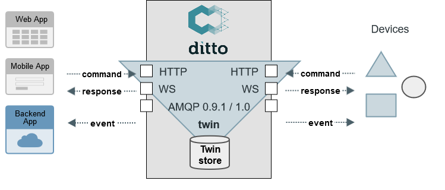
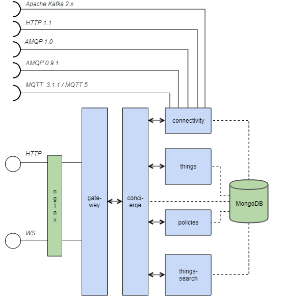
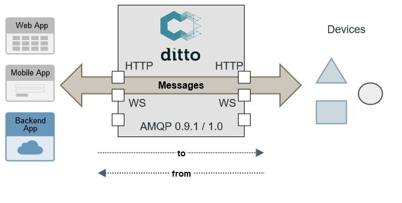

Digital Twins with Eclipse Ditto
webweek rhein-main /18 #wwrm18
23.05.2018
by Thomas Jäckle (@thjaeckle)
who am I?
software developer
@ Bosch Software Innovations
project lead of Eclipse Ditto
lead developer of commercial service
"Bosch IoT Things"
agenda
Motivation
turn physical devices into services
IoT
connecting things from various domains to the Internet
happens
- on devices
- on the edge (e.g. gateways)
- in the back-end (a.k.a. "cloud")
- near the user (apps, uis)
IoT development needs in the back-end
- APIs optimized for the web
- control who has access to which aspects
- directly communicate to devices and access last known state
- get notified about changes/events
- enhance APIs with further functionality
sounds complicated?
let's find out if the Digital Twin pattern can help

Digital Twins
a mechanism for simplifying IoT solution development
Digital Twin metaphor
- mirrors physical devices
- provider of aspects+services around devices
- keep real and digital worlds in sync
- applicable for both industrial and consumer-centric IoT scenarios
in IIoT / Industry 4.0
- asset administration shell ("Verwaltungsschale")
- holistic view of all capabilities (services) and aspects of an asset

our interpretation
- a pattern for working with things in the IoT
- single source of truth
- harmonization of data/state
- orchestration+authorization of aspects
- APIs - Device as a Service
Eclipse Ditto
… where IoT devices and their Digital Twins get together
in context

domain model
- how does a Digital Twin in Eclipse Ditto look like?
- KISS
→ docs
turn device data into API
{
"thingId": "namespace:car-1",
"acl": { ... },
"attributes": {
"manufacturer": "ACME corp",
"productionData": {
"serialNo": 4711
}
},
"features": {
"headlights": {
"properties": {
"on": false
}
}
}
}GET/PUT/DELETE /api/1/things/namespace:car-1
/api/1/things/namespace:car-1/thingId
/api/1/things/namespace:car-1/acl
/api/1/things/namespace:car-1/attributes
/api/1/things/namespace:car-1/attributes/manufacturer
/api/1/things/namespace:car-1/attributes/productionData
/api/1/things/namespace:car-1/attributes/productionData/serialNo
/api/1/things/namespace:car-1/features
/api/1/things/namespace:car-1/features/headlights
/api/1/things/namespace:car-1/features/headlights/properties
/api/1/things/namespace:car-1/features/headlights/properties/on
data harmonization
- devices send data in various formats
- Ditto structures data of things (attributes, features)
- devices shouldn't need to be aware of Ditto
device data received via AMQP can be transformed via a custom JavaScript function
Ditto Protocol API
- JSON based text protocol for communicating with Digital Twins bidirectionally (commands/events)
- via: WebSocket, AMQP 1.0 (e.g. Hono), AMQP 0.9.1
{
"topic": "namespace/car-1/things/twin/events/modified",
"headers": { ... },
"path": "/features/headlights/properties",
"value": {
"on": true
},
"revision": 42
}access control
API v1: ACL
"acl": {
"ditto": {
"READ": true,
"WRITE": false,
"ADMINISTRATE": false
},
"adam": {
"READ": true,
"WRITE": true,
"ADMINISTRATE": true
}
}- inlined in Thing
API v2: Policy
{
"policyId": "namespace:car-1-policy",
"entries": {
"owner": {
"subjects": {
"nginx:admin": {
"type": "nginx basic auth user"
}
},
"resources": {
"thing:/": {
"grant": ["READ","WRITE"],
"revoke": []
},
"thing:/features/firmware": {
"grant": [],
"revoke": ["WRITE"]
},
"policy:/": {
"grant": ["READ","WRITE"],
"revoke": []
}
}
}
}
}twin vs. live

- uses Ditto as persistence
- Ditto enforces access control
- Ditto processes commands, emits events

get notified about changes
via WebSocket
var ws = new WebSocket(
"ws://u:p@ditto.eclipseprojects.io/ws/2");
ws.onopen = function(w) {
w.send('START-SEND-EVENTS');
};
ws.onmessage = function(msg) {
console.log('received: ' + msg.data);
};- bidirectionally send/receive Ditto Protocol messages
via SSEs
var source = new EventSource(
"https://ditto.eclipseprojects.io/api/2/things?ids=namespace:car-1", { withCredentials: true });
source.onmessage = function(msg) {
console.log('received: ' + msg.data);
};- unidirectionally receive changes in Thing JSON form
get notified about changes
notifications also possible via
- AMQP 1.0 endpoint (e.g. Eclipse Hono)
- AMQP 0.9.1 broker (e.g. RabbitMQ)
Ditto manages connections to those since version 0.3.0-M1
→ docssearch

- you must not
- Ditto has you covered
GET /api/1/search/things
?filter=like(attributes/manufacturer,"ACME*")GET /api/1/search/things
?filter=and(
exists(attributes/manufacturer),
eq(features/headlights/properties/on,true)
)
&namespaces=org.eclipse.ditto
&option=sort(-attributes/manufacturer)
&fields=thingId,attributes/manufacturer,_modified- search for arbitrary data with RQL query
- Ditto enforces access control
- apply field projection over the results
- don't worry about indexing
nonfunctional

- modular architecture of Ditto services
- horizontal scalability of each Ditto service
- runtime dependency to only MongoDB
- included monitoring (JVM metrics, roundtrips, MongoDB)
- prepared for operations (e.g. via devops commands)
A framework for Digital Twins
acting as a Twin orchestrator
orchestration via messages
- Ditto as router of messages (via "live" channel)
- enforcement of access control
- correlation of command/response (e.g. for HTTP)

- enhance the API of a Digital Twin by a custom WebSocket consumer
examples for orchestrations
- enhance a location-aware Twin with the current weather
- enhance a Twin with an API for its known spare parts
Demo time!
GitHub sources
Wrap up
- Digital Twins as pattern for simplifying IoT back-end development
- Mission: provide Device-as-a-Service
- Eclipse Ditto as framework for Digital Twins
Roadmap 2018
- release (non-milestone)
- using Eclipse Vorto generator for validation
- mapping raw payloads to/from Ditto Protocol
- attracting IoT developers in using Ditto
- integration with other OSS projects
Bosch IoT Things
freemium model
+operated 24/7
+support
+some features
- commercial cloud service offering of Eclipse Ditto
- part of the Bosch IoT Suite
- same team works on Ditto and commercialization
- evaluate Ditto by using free plan